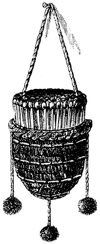
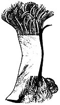
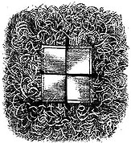

This page contains excerpts from issues of The American Agriculturist dated 1880.
Our little match-holder that hangs below the oilchamber of the student lamp, is one of the appreciated conveniences of the household. In fact, we have one for each large lamp, and wherever the lamp goes, the matches are there ready to be used in lighting it. The latest comer, the neatest, and "the one for the parlor"-we use it for the sitting-room-is made with an egg-shell for the cup and is covered with worsted, and decorated as shown in the accompanying engraving. A wide range for the exercise of taste is allowed in the construction of this little convenience. The cup may be of tin or china, and the covering of Bristol board with initials, or the word MATCHES worked on-but, to our notion, this latter is not called for; in this age and country matches are known by all.
For keeping up the freshness and vigor of the lawn, a spring dressing should be given, either of ashes, guano, fine bone, Nitrate of Soda, or a rich and thoroughly flue compost. Sow grass seed on any bare spots. In planting ornamental trees, grouping, rather than formal planting or setting in rows, is to be encouraged, so far as the nature and size of the grounds wilt permit it to be done.
New Lawns. -Let the soil be in a tine state of tillage by thorough working and manuring, after which, for heavy clay soils, Kentucky Blue-Grass is to be sown. Red Top is best for light and sandy soils, with a little mixture of White Clover in both cases. The seed should be applied liberally, as a fine turf can only be had when the plants are crowded. All the way from two to six bushels to the acre are advised. If what we buy were all seed, no doubt the smaller quantity would be enough, but in the uncertain relations between chaff and seed, one can not be sure of properly thickseeding with less than four bushels. Sow half the seed in one direction, and cross-sow with the other half. The seeding should be done as ,soon as the land can be put in proper condition.
Walks and Drives. -A solid foundation is the only surety for a good want or drive; and to secure this, use large stones for the bottom, begin below the reach of frost, and smaller ones nearer the surface. A walk or drive that is cheap in the beginning will always be unsatisfactory and dear in the end.
Annuals. -Sow these in hot-beds about six weeks before the outside beds are to be ready for them.
Bulbs in beds may be uncovered so soon as warm weather sets in, covering again on very cold nights.
Turfing. -In selecting turf for use around beds and along walks, etc., see that no unwelcome weeds are thereby introduced. The foundation for the turf should be as carefully prepared, as for seed.
Our book-case is made of plain pine. When it was made we could not afford glass doors, nor paint, nor varnish. The grain of the pine was very pretty, but it became a serious trouble to keep it clean. Now we have stained it with good success, I think; and next week I think we will add a little varnish. But I am pleased with the staining, and I will tell how it was done. I said I would do it myself, and I looked up a recipe. It said, " use tobacco," but like little Robert Reed,
"I'll never use tobacco, no !"
I haven't a kettle that I could defile by boiling up tobacco in it, so we must have something else. The painter, near, furnished a stain made of burnt umber and some mixing material. I know there was turpentine in it, and I think there was oil. I know there was before we got through with it. It seemed simply a thin paint, and as it covered up the grain of the wood (we tried it first on a pine box); I didn't like it. The painter furnished a fluid (seemingly turpentine) to thin it, but even then it failed to show the pretty grain of the pine. I wet a cloth in kerosene and rubbed off the stain, and lo! I had just what I wanted. We quickly colored our book-case, and it looks as much like black-walnut as any stained wood I ever have seen.
To such as would gladly make their plain parlors a little more attractive, and whose walls must go unadorned, if they cannot manufacture ornaments themselves, the following hints will be acceptable.
STATUARY.-Doubtless some of your readers have old-fashioned Plaster of Paris mantel ornaments that a quarter of a century since were the admiration of all of the members of the family, but which, long ago, stained and faded by time, were consigned to the garret. Some of these may be converted into very pretty "bronzes" by the application of bronze shoe-dressing. Those that are gaudily painted in red, blue, and green cannot be- bronzed in this manner, as the color would not be uniform. Of course, none of them will rival Rogers' Statuary in elegance, but to eyes unskilled in such matters, the deception might not be noticed, and very few would ever recognize old friends under such a guise.
A lady friend favors us with a sample of a paper Lamp Mat, from which the accompanying engravings are made. The construction of this household ornament is very simple. Any kind or quality of thin paper may be used; the one in question is made from an ordinary newspaper, but a more showy mat would doubtless result from using a pleasing shade of paper, or even four well chosen colors-the number of strips in the mat. A single strip is shown in fig. 1, and consists of a piece of paper, nearly a foot in length-this will depend somewhat on the size of the mat desired. Each of these strips of paper is folded smoothly so as to be of six or eight thicknesses, and as wide as one half of the required width of the smooth inner portion of the mat. The ends of the strip are cut with scissors into uniformly fine shreds, leaving a portion in the center twice as long as wide. The four strips, thus prepared, are then placed together, in the form of a square, one end above and the other below its neighbors, and stitched in place by a fine thread. In this way the ends of the four strips make an entire border to the mat, consisting of the long fringe of the finely cut ends of the paper as shown in fig. 2. The cutting of the fringes is the hardest part, as it must be done with care that the shreds are straight and uniform in thickness. The whole work can be made in an hour, and with a slight outlay for pretty colored papers, a useful and ornamental mat can be cheaply and quickly provided for the lamp.
|
 A LAMP MATCH HOLDER |
 Fig. 1. STRIP OF PAPER |
 Fig. 2.THE LAMP MAT COMPLETE. |